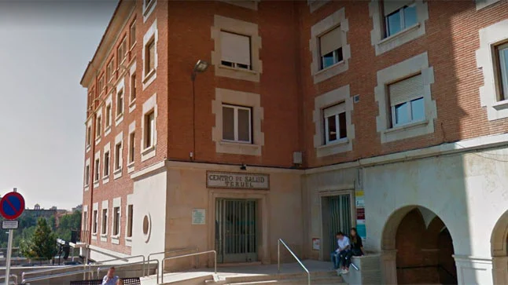

Ubicació i Contacte
Arandilla del Arroyo està ubicada a Conca.
L'aguntament esta ubicat a la Plaça Vella, s/n, 16812 Arandilla del Arroyo.
Es pot contactar amb l'aguntament tocant al 969 31 71 11.
Viure a Arandilla del Arroyo
üåø Avantatges:
- Tranquil·litat i natura: És un entorn rural, allunyat de l’estrès de les grans ciutats.
- Comunitat reduïda: Els habitants solen conèixer-se entre si, cosa que crea un ambient acollidor.
- Aire net i poc trànsit: En comparació amb la ciutat, hi ha menys contaminació i soroll.
⚠️ Desafiaments:
- Serveis limitats: Potser no hi ha supermercats grans o hospitals propers, i cal anar a altres pobles per a determinades compres o atenció mèdica.
- Transport públic escàs: En molts pobles així, els autobusos són molt limitats o inexistents.
- Manca d’oci i oportunitats laborals: Si busques entreteniment o treball en sectors que no siguen agrícoles, potser hauràs de desplaçar-te.
Localització i distàncies
üìç Acc√©s: Arandilla del Arroyo s'accedeix per carreteres locals, sense autovies directes.
üèô Ciutat m√©s propera: Conca (70 km).
üöå Transport públic: No hi ha connexions directes a Conca ni a altres poblacions grans.
üèò Poblaci√≥ gran m√©s propera: Taranc√≥n (90 km).
Informació Poblacional i Política
Població
- Nombre d'habitants: 7 habitants (segons dades de 2020).
- Edat mitjana de la població: No disponible.
- Número de nens i nenes menors de 12 anys: No disponible.
- Piràmide poblacional: No disponible.
Organització Política
- Tipus d'entitat: Arandilla del Arroyo és un municipi independent.
- Partits que governen: No disponible.
Comerços
Per el que he investigat no hi ha comerços grans a aquest poble, hi haura alguna tenda però res gran.
Però un dels supermercats mes propers que he pogut trobar estan:
1.Supermercat La Despensa (Priego, Cuenca) → 15 km (15 min en coche)
2.Supermercat Covirán (Priego, Cuenca) → 15 km (15 min en coche)
3.Supermercat Ahorramas (Tarancón, Cuenca) → 90 km (1h 10 min en coche)
Conexions
Internet: No hi ha fibra òptica confirmada, però es poden trobar alternatives com radioenllaç o satèl·lit.
Telefonia mòbil: La cobertura depèn de l’operador; es recomana consultar abans de contractar.
Alternatives: Internet per 4G/5G amb router o proveïdors d’Internet rural.
Activitats productives
Activitats predominants i sector econòmic:
- Les activitats productives d'Arandilla del Arroyo estan principalment orientades a l'agricultura i la ramaderia, característiques de les zones rurals de Terol.​
-Altres activitats rellevants: A més de les activitats agrícoles i ramaderes, el turisme rural ha guanyat importància en els últims anys, aprofitant el patrimoni natural i cultural de la zona.
Seveis publics: Sanitat
Centre de salut: Arandilla del Arroyo disposa d'un consultori mèdic local que ofereix serveis bàsics de salut. Per a atenció d'urgències i especialitzada, els veïns han de desplaçar-se a poblacions properes, com Alcañiz o Terol, que compten amb hospitals i centres de salut amb serveis d'urgències.
